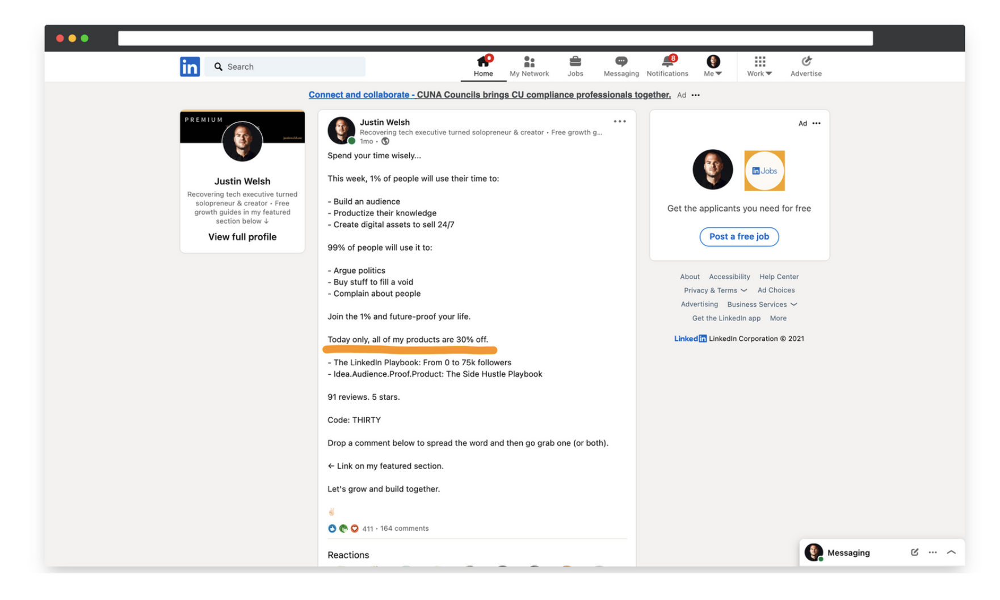

Solopreneurs often ask me, "What can I do to increase my revenue?"
Today, most of my revenue comes from two digital courses, The LinkedIn Operating System and The Content Operating System, which brought in $2M+ in 2.5 years.
Over the last 42 months (earning $4M+ online), I've learned a thing or two about generating revenue.
So I’ve created this free guide to share what I’ve learned along the way.
I hope it's helpful.
Increasing your revenue shouldn't equate to burnout
Most people think they need to work harder and longer hours to increase revenue.
But that's not necessarily true (or healthy).
In 2019 I left my high-paying corporate job because I was burnt out, realizing that I needed to shift my priorities and focus on my well-being.
When I committed to solopreneurship, my goal was to do more fulfilling and less obligated work. I wanted to make enough to live comfortably, spend more time with my wife, and see the world.
Fast forward 5 years, and my mindset remains the same.
Contrary to what others may tell you, business growth is possible without the burnout.
To help get you on the right path, I'll go over 8 of my favorite ways to sustainably increase revenue in 2023 and beyond.
Let's get into it.
9 ways to increase your revenue
- Build online and show your industry expertise
- Promote your products and services
- Make your offerings accessible
- Create urgency by giving a limited-time offer
- Give more than you take
- Provide value quickly
- Encourage happy customers to leave feedback
- Boost your visibility with ads
- Diversify your income streams
1. Build online and show your industry expertise
Building an online presence on a platform like LinkedIn or Twitter is an outstanding way to connect with professionals, show your expertise, and make money.
Putting in 15-60 minutes of work daily can lead to amazing outcomes:
- More people will see what you bring to the table
- You attract an invested audience and gain their trust
- Selling becomes much easier when people are already sold
After leaving my job, I started writing on LinkedIn and sharing insightful posts about the SaaS industry.
In the beginning, my engagement was low (as expected). But over time, I started building an audience who trusted me and wanted to learn from me. SaaS professionals reached out to inquire about my consulting services.
This was the start of where I am today. Now my audience has grown, and I've shifted my focus to helping people navigate solopreneurship instead of consulting for SaaS companies.
In 2021, I added Twitter and have grown my audience to nearly 400,000 followers. Exploring a new social media platform has allowed me to expand my message to more people, and in turn, create more revenue from helping people succeed.
One of the biggest lessons I've learned in my journey is this:
People like to buy from people they know and can relate to.
So, become that person.
If you're stuck on where to start, here's what I would do:
Become a familiar face. Get known for something. Generate massive attention.
2. Promote your products and services
I talk to a lot of new solopreneurs, and most of them have one common problem:
They have a gut-wrenching hesitation to promote themselves.
And I totally get that. It can be nerve-wracking to put yourself out there.
But to make sales, you have to tell people about your offer. You can't assume they'll magically find your website and buy from you.
My favorite way of advertising is occasionally adding a clear call to action in my social media posts on LinkedIn and Twitter. This gently reminds readers about my courses, subscriptions, and services without being pushy.
The goal of self-promotion is to keep your offerings front of mind when prospects see your content.
If they like what they see, they'll be more likely to click and become potential customers.
Other ways you can promote your products and services without being aggressive include:
- Showing testimonials about your work from past clients
- Sharing your availability on social media (if you offer a service)
- Presenting case studies of impressive results you've generated
- Inviting people to sign up for your email list, where you share subscriber-exclusive value for free (while again, reminding them about your offerings)
3. Make your products accessible
Besides promoting your products, also make them accessible to your target audience no matter where they are.
Many online creators with smaller communities than mine are offering "masterclasses" for $5K+.
It takes a significant amount of trust-building and nurturing to persuade someone to invest in a high-ticket deal like that. And you run a greater risk of completely disappointing them if your value doesn't match up to the price.
That's why I sell my products at a price point most people can afford.
By providing excellent value at the affordable price of $150, I inspire customers to dive into my courses, reap the benefits, and share positive experiences with others.
Since I sell an average of 30 courses each day, I have customers essentially doing the "selling" for me. People trust recommendations from others they know, so it becomes a no-brainer purchase.
Every single day, somebody, on some social media platform, is talking about my products.
This leads to more passive income with less marketing efforts on my part.
In a nutshell, impulse pricing:
- Widens your customer base, bringing in more sales
- Gives more people the chance to experience your product's value
- Builds trust as customers perceive your pricing as fair and reasonable
4. Create urgency by giving a limited-time offer
Offering limited-time discounts, coupons, and special offers is an effective way to boost sales.
Here's why:
When people know that a special deal is only available for a limited time, it sparks a sense of urgency and fear of missing out (FOMO).
This motivates them to take action and buy sooner rather than later. Those on the fence about your product because of its price may be more likely to convert into customers.
The psychological impact of urgency combined with a compelling discount can drive sales, attract new customers, and generate excitement around your brand.

Do this sparingly, and it can be a win-win — you earn more money (through higher sales volume) while giving others the satisfaction of a great deal.
5. Give more than you take
Building a loyal customer base takes time, effort, and a willingness to give more than you take.
The 80/20 rule applies here:
Provide value to your audience most of the time (80%) and promote your services and products occasionally (20% or less). This is a powerful way to gain people's trust and increase the chances of them buying from you in the future.
Remember, nobody likes feeling like they're constantly being sold to.
So, focus on giving something valuable first. It could be useful information, tips, or resources related to your industry.
And when you promote, make sure it's in a way that adds value and doesn't come off as aggressive or pushy.
Striking this balance has helped me build credibility, trust, and engagement with my audience on LinkedIn and Twitter.
TLDR; Consistently deliver value, and the dollars will come.
6. Provide value quickly
People are busy. They want to get from point A to point B in as little time as possible.
Knowing this, you'll get more sales if you can solve their problems quickly.
In my courses, I cut the fluff and teach people what they want to learn in under 2 hours.
Keeping my students engaged increases the completion rate.
After enjoying the full experience, they're more likely to recommend my courses. This cycle brings in more students and in turn, more revenue.
Bonus: Boost customer loyalty by offering a referral program where students earn rewards or a percentage of sales revenue when others sign up through a unique link. I’ve done this and now have 3,000+ affiliates doing roughly $300,000+ per year in revenue on my behalf.
7. Ask happy customers to leave a positive review
Gathering social proof should be a top priority for every single Solopreneur.
It's a crowded space out there and testimonials are an easy way to stand out.
So, make it easy for people to see why they should do business with you!
The best way to do this is to provide a stellar customer experience and encourage happy customers to leave feedback.
When potential buyers see positive reviews, testimonials, or endorsements from satisfied customers, it builds credibility in your offerings.
Social proof is evidence that your products and services are high-quality and worthwhile. It makes people more confident in making a purchase, leading to higher conversion rates and increased revenue.
At the end of my courses, I invite students to leave a review and tell their friends if they gained from what they learned.
By doing this, I create opportunities to expand my courses' reach and attract new students.
8. Boost your visibility with ads
Not all ads are equal, so be strategic with online advertising.
Don't throw money at any platform out there and hope for the best. Instead, find your right audience and deliver a message that resonates.
One avenue many of my followers have found success with is sponsoring my newsletter, The Saturday Solopreneur. They get to connect with a tight-knit community of folks who truly care about the content and what's being shared.
When you sponsor content that aligns with your brand and message, you're not just buying ad space. You're buying a connection to an audience that's already primed for what you offer.
Remember: It's not about the quantity of people who see your ad, but the quality. A targeted, engaged audience is worth its weight in gold.
Each time a founder, solopreneur, or business owner sponsors my newsletter, they're doing more than promoting their product or service. They're building trust, establishing authority, and most importantly, increasing their revenue potential.
9. Diversify your income streams
As The Diversified Solopreneur, I couldn't finish this guide without encouraging you to diversify your revenue streams.
Relying on a single income source is risky. It leaves you vulnerable to market changes or unexpected challenges.
By diversifying your offerings, you protect your income and create stability. If one income stream slows, others can help offset the impact and ensure a consistent cash flow.
I love diversification because it allows me to tap into multiple customer segments and cater to their needs in different ways.
For example, I've done consulting, sponsorships, subscriptions, and digital courses during my solopreneurial journey. My customers get to pick the offering that best suits their needs and learning styles.
Make sure you have different offers at different price points so you can meet every single customer where they feel most comfortable.
Since I'm catering to a wider audience, I'm making more money than I would if I committed to only one venture.
In this digital age, it doesn't hurt to have a healthy mix of active and passive income streams.
Start growing your revenue
So there you have it — 9 proven tactics for revenue growth.
- Build online and show your industry expertise
- Promote your products and services
- Make your offerings accessible
- Create urgency by giving a limited-time offer
- Give more than you take
- Provide value quickly
- Encourage happy customers to leave feedback
- Boost your visibility with ads
- Diversify your income streams
Starting with the first step of building online will put you on the right track to growing your revenue. Make those meaningful connections, document your learnings, and share your expertise.
Remember that nobody knows it all from the get-go. I learned my best lessons from experimenting as I built my one-person online business — and you can, too.
If you need more guidance, check out my free guides "How to Grow & Monetize LinkedIn" and "How to Build Online Income."